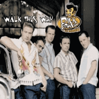

Dick Brave and the Backbeats - Walk This Way (Single, 2004)
01 - Walk This Way (2:49)
02 - Be The One For Me (2:36)
© WEA Records :: [5050467-3222-2-6]
Notes
Germany.
Original release (Maxi-Single) also with included video "Walk This Way"
reference information: Discogs®
Review
243/366 (Project 366)
Fanciful Rockabilly with shade of hot Pop and cool Rock'n'Roll. Balanced between some Rockabilly Revival and general eighties rockin' and rollin' with a much more contemporary look, candy vocals harmonies and wilderies. First track with somewhat rowdies energy and the second track with very bright sensations and even with some lullaby and sweetmeats feelings. Quite modern Rock'n'Roll with Rockabilly pop flavour. Chic vocals, fancy backing, choppy and vintage atmosphere, with some great catchy portions in a guitar arrangement. Also good to hear kind of lovers ballad with melodious and gallopin' tune with such a suitable voice. Conceptual arrangements, suitcase for the Pop scene, vocals, multi-instrumental sound, moving-like tunes. Good for backbeats!